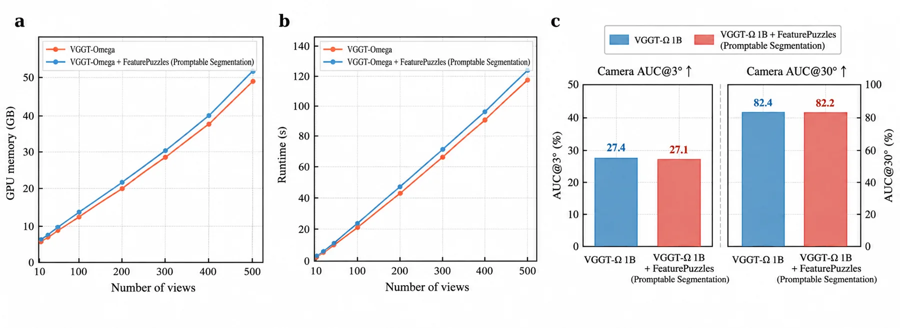
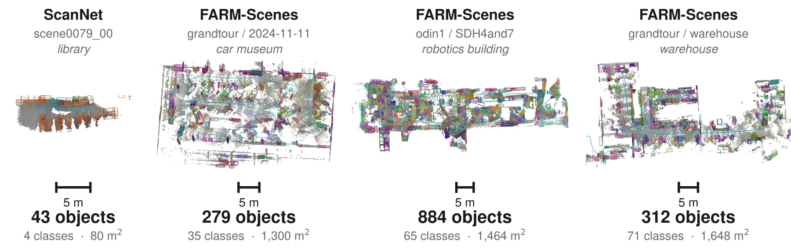

Feature Puzzles：只用单图监督，把多视角一致的分割接到前馈重建主干上
Feature Puzzles: Single-Image Supervision for Multi-View 3D-Aware Segmentation
把一张带标注的父图裁成 N 个重叠子图当作“合成视角”，因为子图到父图的仿射映射 π_n 是已知且可逆的，掩码与 DINOv3 特征可以做精确 pull-back，于是多视角一致性由构造保证、不需要任何真实多视角标注。在冻结的 VGGT-Ω 上用第 18 层起的 LoRA 加两个轻量头，NVOS mIoU 93.2（优于 MV-SAM 92.1、SAGA 92.6），ScanNet++ 实例跟踪 63.60 对 IGGT 73.02（IGGT 是域内），零样本开放词表 ScanNet-19 30.50 低于 EmbodiedSplat 52.12，但域内微调后 60.95 反超；363 张图端到端 25.9 s。
NVOS mIoU
ScanNet++ tracking
inference time
precision at 248 views
作者、单位与技术谱系 · Research context
作者与单位
研究脉络
- Puzzles / Image-to-Clips（Ma, Wang, Liu, Ahmedt-Aristizabal, Nguyen, NeurIPS 2025）团队前作关系：同一位第一作者把单图/片段合成多视角数据用于几何点图回归；本篇把同一构造从“几何监督”扩到“语义掩码与稠密特征”。[论文 §2、§3.2 与参考文献 Ma et al. 2025a]
- VGGT-Ω（Wang et al., CVPR 2026）与 LingBot-Map（Chen et al., ECCV 2026）方法基座关系：前者是默认的离线多视角主干，后者是用于检验配方可迁移性的流式因果主干；本文不改主干架构，只加适配器与头。[论文 §3.3 与 Table 4]
- VGGT-Segmentor（Gao et al., CVPR 2026）与 MV-SAM（Jeong et al., 2026）问题上游 / 直接对照关系：两者都做“单图监督 + 跨视角分割”：前者用 VGGT 点轨迹做成对源-目标匹配，后者用冻结 π³ 点图预测器保证推理期一致性；本篇改成 N 视图一次前向联合推理。[论文 §2 相关工作]
合作网络
- ANU 与 CSIRO 的共同署名Australian National University → CSIRO, Australia关系：共同署名（同一论文的机构合作）[官方项目页作者单位]
- Jiahao Ma 与 Chuong Nguyen / David Ahmedt-Aristizabal 的前作合作Jiahao Ma（ANU） → Chuong Nguyen、David Ahmedt-Aristizabal（CSIRO）关系：共同署名（HashPoint, CVPR 2024；Puzzles, NeurIPS 2025）[论文参考文献 Ma et al. 2024 / 2025a]
- 中国科学技术大学节点Qiang Zhang（USTC） → Feature Puzzles 项目关系：论文署名（单位标注）[官方项目页作者单位]
单位与角色来自项目页与 arXiv 首页；脉络条目按参考文献与同作者作品整理，属基于来源的解读。未发现公开证据支持导师/师生关系，故不写入。
方法本质拆解 · What actually changed
只训练适配器与两个轻量头
主干是冻结的 VGGT-Ω，只在第 18 层之后插入 LoRA（r=16、α=16），外加掩码头与特征头；早期块、深度头与相机头都不动。任务监督只有 SA-1B 单图掩码（提示分割）与冻结 DINOv3 单图特征（开放词表），没有任何真实多视角或视频标注。八张 A800 训练，消融用 2,500 步短预算；适配器初始化保证训练开始时等价于原主干。
约束来自精确的坐标映射，而不是新损失
子图到父图的仿射 π_n 由采样框直接给出，不需要深度、不需要相机模型，可逆且精确；掩码与特征都按它 pull-back，因此重叠区的监督在构造上相同。另外两条约束是重叠课程（最小 IoU 0.7→0.1）与 Gram 锚定（匹配学生与教师在 K×K 相似度矩阵上的几何），后者用来保住跨边界特征的可分性。真正作用在变量上的是 LoRA 的低秩增量与 FiLM 的逐通道缩放/平移，而不是对几何量的硬约束。
一次前向，无逐场景优化
给定 N 个子图/视图与一个或多个提示，掩码头一次前向输出所有视图、所有实例的掩码，不需要匈牙利匹配、点跟踪或成对源-目标匹配。开放词表侧把每帧特征按 0.02 m 体素平均、用最近体素特征与文本嵌入做余弦分类，全流程前馈、无测试时优化。适配器可关闭，从而在同一主干上先跑几何、再跑语义，几何输出与原始 VGGT-Ω 一致。
几何先验来自主干，语义一致性来自构造
方法把“多视角一致”拆成两个来源：几何上，VGGT-Ω 已经知道不同视角如何对应同一 3D 点；语义上，共享父图的精确 pull-back 让同一实例在不同子图里有同一个全局编号，于是跨视角注意力只需要学“把父图里的语义沿着主干已建立的对应关系传播”，而不需要自己发现对应。它没有做的是：不估计新几何、不做全局 BA、也不保证真实大视角差下的语义一致（248 视角精确率仅 22.8%）。
输入 = 单张带掩码的父图 + 冻结 VGGT-Ω；改变的位置 = 第 18 层后的 LoRA 与两个轻量头；约束/动作 = 用已知仿射映射把父图标签精确 pull-back 到重叠子图，再用跨视角注意力传播；直接效果 = 零多视角标注即得跨视角一致掩码，NVOS 93.2 mIoU。

结论与问题Conclusion & Motivation
核心结论
Feature Puzzles 证明：不需要任何真实多视角或视频语义标注，仅用 SA-1B 单图掩码（以及 DINOv3 单图特征蒸馏），就能给一个冻结几何的前馈重建主干加上跨视角一致的分割能力。关键不是新网络，而是数据构造：把父图裁成重叠子图，子图到父图的仿射映射已知且可逆，标签按同一映射 pull-back，于是任意两个子图在重叠区的监督完全相同，一致性由构造成立。结果是一次前向在 NVOS 上拿到 93.2 mIoU（表内最高，含逐场景优化方法），SPIn-NeRF 88.5 低于逐场景 3DGS 方法，ScanNet++ 实例跟踪 63.60/87.50 接近域内训练的 IGGT（73.02/98.90），零样本开放词表 ScanNet-19 为 30.50，域内微调后升到 60.95 并超过 EmbodiedSplat 的 52.12。
动机与问题
前馈重建主干（VGGT、π³、MapAnything、DA3）已经把几何先验做得很好，但“同一物体在不同视角下是同一个东西”这层语义仍然依赖稀缺的多视角标注：带位姿的 RGB-D 扫描、人工整理的跨视角实例集、或多视角蒸馏信号。另一边，单图分割数据（SA-1B 量级）极其充裕，却没有跨视角对应关系。论文要回答的是：能否只用单图语义监督，把语义层接到已有几何主干上。作者把范围划得很清楚——他们不声称能从单目图像学到 3D 一致性；几何先验来自预训练主干，本文贡献的是“把表示适配到多视角一致语义”的监督框架。这也是它和 IGGT、MV-SAM、VGGT-Segmentor 的分界线：前三者分别依赖域内 RGB-D、推理期点图预测器、成对源-目标匹配，本篇是一次前向联合处理 N 个视图。
方法Method
方法总览
第一步是造“拼图”：父图 I 尺寸 H×W，采样 N 个重叠子图，边长取短边的 0.5–0.9 并重采样到 R×R，新子图必须与已接受子图的 IoU 超过阈值以保证重叠图连通；训练时把最小重叠从 0.7 退火到 0.1，先看近似重复视图、再逐步加大视角差。第二步是搬标签：子图到父图的仿射映射 π_n 是采样时确定的，不需要估计、不需要深度或相机模型，掩码按最近邻、稠密特征按双线性重采样后 pull-back，于是重叠区满足 ℓ_i(π_i⁻¹(p)) = ℓ_j(π_j⁻¹(p)) = ℓ(p)。第三步是接主干：冻结 VGGT-Ω 早期块，从第 18 层起加 LoRA（r=16、α=16），融合缓存的多层 token 得到共享表示 F_n，再分给掩码头与特征头。掩码头用 SAM 风格提示编码器 + FiLM 注入 + 跨视角自注意力 + 双向注意力 + 加权像素解码器与 per-instance kernel；特征头用跨视角注意力与 RGB 引导上采样对齐 DINOv3 空间。推理时适配器可关闭以恢复原始深度与相机输出，因此同一主干可以两遍推理：一遍几何、一遍语义。
关键技术细节
训练配置写得很具体：缓存 VGGT-Ω 的第 {4,11,17,23} 块、2048 维 token、工作维度 768、bfloat16、AdamW + 余弦退火，八张 A800；提示分割用 N=6 视角、4 个 object token、4 层双向注意力、8 头，多视角提示概率 0.5，支持掩码/框/点（每次最多 6 点），LoRA 从第 18 块起 r=16、α=16；开放词表预训练用 6 个 256×256 裁剪、预测 128×128 特征、Gram 目标采样 512 像素、warp 目标最多 12 对视图，损失权重 (λ_feat, λ_warp, λ_gram)=(1.0, 0.1, 0.5)。分割损失是 BCE + Dice + IoU 回归 + 跨视角 token 一致性 + 点提示监督的加权和。开放词表第二阶段加逐像素文本对齐交叉熵，温度 τ=0.07，文本嵌入来自冻结 CLIP 文本塔并经冻结 Talk2DINO 映到 DINOv3 空间；推理时按 0.02 m 体素平均特征再做最近文本分类。一个容易忽略的细节是：DINOv3 教师特征必须在裁剪之前对整张父图算一次再 pull-back，否则逐视图算会因为 crop-and-resize 改变 transformer 特征、在重叠区互相矛盾。

实验Experiments
实验设置
提示分割在 NVOS 与 SPIn-NeRF 上按 SAGA 协议评测，只给单个参考视角掩码；任务训练仅用 SA-1B 风格单图掩码，不用视频或真实多视角。实例跟踪按 IGGT 协议在 ScanNet++ 上做 7 个场景 19 个实例的单次前向传播；再把同一协议搬到 nuScenes-mini（9 个场景、6 个环视相机、投影 3D 框当伪掩码），此时所有方法都 OOD。开放词表分割按 EmbodiedSplat 协议在 ScanNet/ScanNet200/ScanNet++ 上评测（11 个 ScanNet 场景 + 4 个 ScanNet++ 场景，stride 10），用真值几何提升、0.02 m 体素、Talk2DINO 文本分类，因此衡量的是语义特征质量而非几何。指标为 mIoU / mAcc / 时序成功率 T-SR（分 all 与 vis 两种口径）/ T-mIoU，对照包括逐场景 NeRF 与 3DGS 方法、SAM2、MV-SAM、IGGT、EmbodiedSplat 及其 fast 版本。
实验数字与比较
Table 1（提示分割）：NVOS 上本文 mIoU 93.2 / mAcc 98.3，高于 MV-SAM 92.1/97.5、SAGA 92.6、SA3D-GS 92.7、OmniSeg3D 92.8，也高于 SAM2 的 88.7；SPIn-NeRF 上 88.5/97.7，高于 SAM2 的 86.6 但低于 MV-SAM 92.9 与 SAGA 93.7。Table 2（跟踪）：ScanNet++ 63.60/87.50 对 IGGT 73.02/98.90、SAM2* 44.16/57.89；nuScenes-mini 上 T-mIoUall 4.78 / T-mIoUvis 20.97 / T-SRall 47.13 / T-SRvis 88.89，其中 T-SRvis 为全表最高（IGGT 78.89、SAM2* 28.70）。Table 3（开放词表）：零样本 ScanNet-10/15/19 为 41.09/35.87/30.50，ScanNet200-70 类 13.79，ScanNet++ 20 类 30.12；EmbodiedSplat 对应为 57.41/55.18/52.12/34.75/44.03。域内微调后本文为 68.03/64.38/60.95/47.79/54.68，五个子集全部超过 EmbodiedSplat（例如 ScanNet200 47.79 对 34.75、ScanNet++ 54.68 对 44.03）。效率：363 张图端到端 25.9 s，论文称比 EmbodiedSplat 的 88 min 快约 18×（该倍数与正文数字不自洽，见局限）。
消融/失败边界
分量消融（2,500 步短预算，Figure 4）：开放词表侧只用最后一层特征掉 6.8 mAcc，去掉 puzzles 掉 3.0，去掉 Gram 锚定掉 2.8，去掉跨视角注意力掉 1.9；提示分割侧去掉 LoRA 掉 17.1 mIoU，只在高重叠难样本上训练掉 15.0，去掉跨视角注意力掉 4.1，去掉多视角提示掉 3.0。作者自己指出 L_warp 与 L_cons 影响很小，说明“精确 pull-back 的构造一致性”比“再加一致性损失”更关键；而 No-Puzzles 与 Hard-ovlp 两个变体都同时改动了课程与结构，不能单独归因。真正会限制部署的是视角数：6 视角时精确率 97.8%、召回 84.2%；到 40 视角精确率降到 78.3%，248 视角只剩 22.8%（召回稳定在 69.5–83.1%），显存与时间近似线性增长（5.40 GB/1.68 s → 32.11 GB/16.68 s）。换主干也掉：同一配方接 LingBot-Map（流式因果注意力）在 ScanNet-10 只有 27.38 mIoU，比 VGGT-Ω 的 41.09 低 13.7，尽管它对 DINOv3 目标的拟合更好（余弦 0.816 对 0.766）。
局限与迁移Limitations & Transfer
局限与待核验
作者明确承认三点：仿射裁剪没有视差与遮挡（可选地用 MoGe-2 深度做 6-DoF 增广来补）；大视角数下精确率持续下降，说明瓶颈是感知可扩展性而非显存；域内微调后是闭集设定，不再算零样本开放词表。我们待核验的有：第一，正文称“基本保持原相机位姿”，但具体 7-Scenes 数值只在附录图 5(c) 里出现，需要核对开/关适配器两档的 AUC 差值。第二，363 张图 25.9 s 与“比 88 min 快 18×”不自洽（88 min/25.9 s ≈ 204×），可能两边场景规模不同，引用时应只写绝对值。第三，nuScenes-mini 的绝对指标很低（T-mIoUall 4.78），论文强调的 T-SRvis 88.89 是“可见帧内成功传播”的口径，不能当作跨相机全帧性能。第四，全部训练监督来自单图，方法本身无法验证“真实多视角几何一致性”，只能用下游掩码指标间接证明；对反光、透明、无纹理表面的行为未报告。第五，开放词表依赖冻结 DINOv3/Talk2DINO 教师，教师升级会改变结论，论文没有做教师替换的敏感性分析。
与你研究路线的关系
最直接可借的是“两遍推理”的接口设计：几何适配器关掉时主干完全保持原样，语义头单独打开，这让我们可以在不改动现有 VGGT/COLMAP 前端的前提下加一层实例分割，而不必担心位姿回归被语义训练污染。第二个可迁移模块是共享父图 pull-back：我们的多相机采集里，同一场景在不同相机/不同时刻的图像天然存在重叠，若能构造出精确的父图坐标映射（例如用已有重建把多帧投到同一参考平面），就能以零人工标注生成一致的实例掩码。第三个是重叠课程（0.7→0.1）：先学近重复视图、再学大视角差，这个顺序对任何跨视角关联任务都适用。下一步实验：把 LoRA + 掩码头接到我们自己的重建主干，在我们多相机台架序列上测掩码跨视角传播的 IoU 与时序成功率，同时对比“开适配器”和“关适配器”的位姿/深度差异；再把视角数从 6 拉到 40/80，复现它的精确率衰减曲线，判断在我们的滑窗长度下是否需要分块聚合。

